Introduction
Mendeley Reference Manager is a free web and desktop academical reference management application. It can be integrated with Microsoft Word, which is a very useful tool for students who write papers. There are a desktops for Windows, Mac and Linux, and a web version available online, which you can access from anywhere.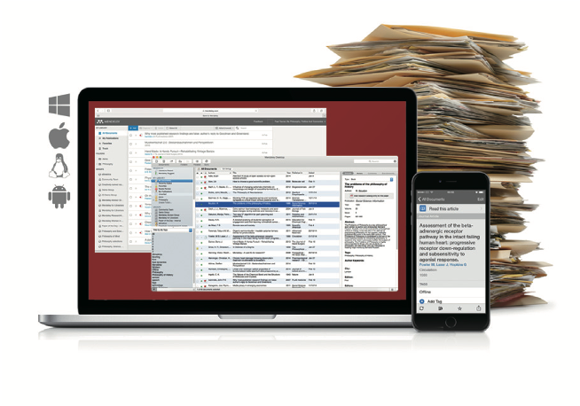
Main Use
- Creating a personal literature database (free)
- Automatic reference list creation (free)
- Sharing of literature folders (2GB cloud storage for free version)
Subscription
Bibliographic management features of Mendeley are basically free to use. However, if you want to use more than 2GB of their cloud storage, you have to subscribe to the paid version. You can access this page to subscribe.The size of the paper PDF file varies, but the size of a PDF file is from 1MB to 5MB.
Getting Start to Use Mendeley
Go to this page to register as a user and download the desktop.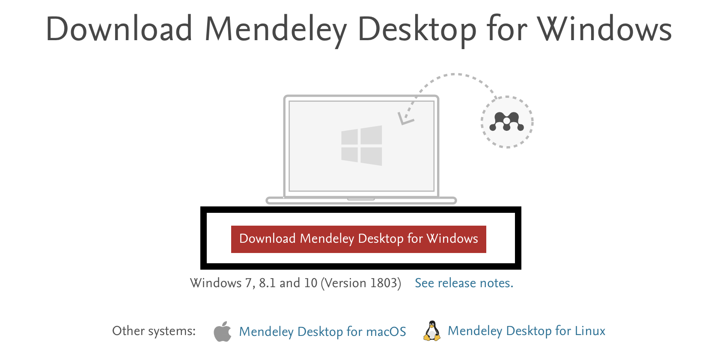
I will use the Mendeley desktop for Windows to explain how to use it.Folder Creation
It is recommended to manage documents on folders. To create the folder, click the button shown in the picture below at the top left of the dialog and give it a name.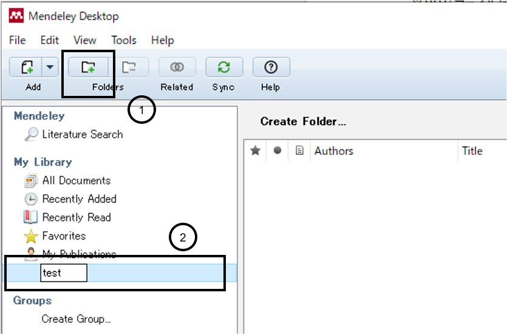
Importing References into the List Using PDF File
The easiest way to add a bibliography to Mendeley is to import a PDF. Enter the "File" tag at the top left and click "Add Files ...". Then select the document you want to introduce.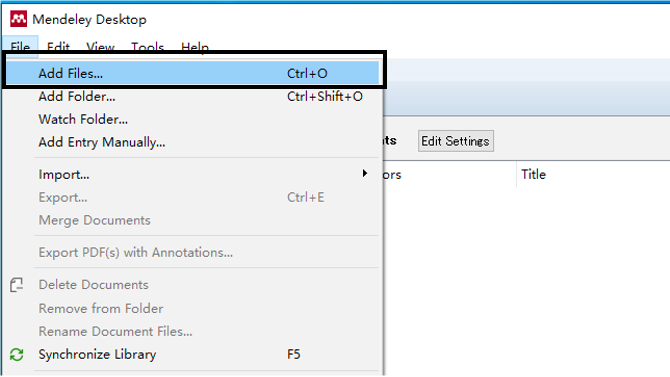
The files imported are automatically analyzed and the basic information of the paper is shown on the right. The result is as follows.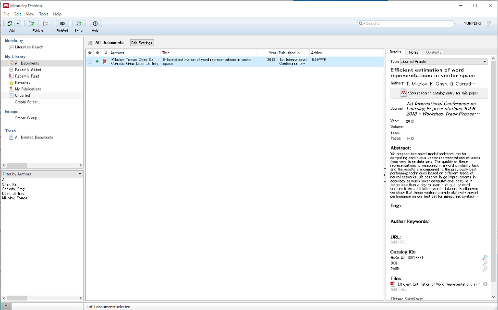
Importing References into the List Using BIB File
Another way to introduce the literature is to use the BIB file. First, open the Notepad. Then, go to Google Scholar and search for the article you want to cite. Click the quotation mark below and click "BibTeX" in the dialog that appears.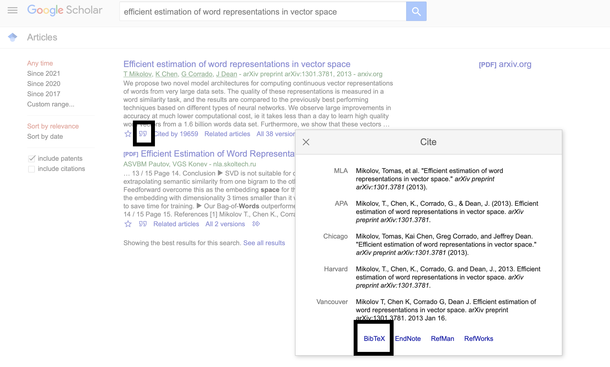
Then you can see the code in the opened tag. Copy the entire code and paste it into Notepad.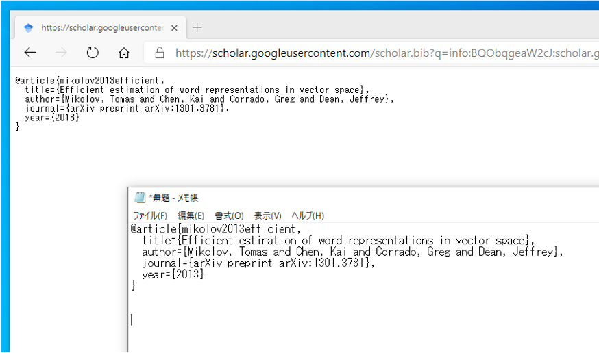
Repeat the same and paste a lot of bibliographic BibTeX here. Then, save it using file name with BIB extension. For Example, we can use references.bib as the name of this file.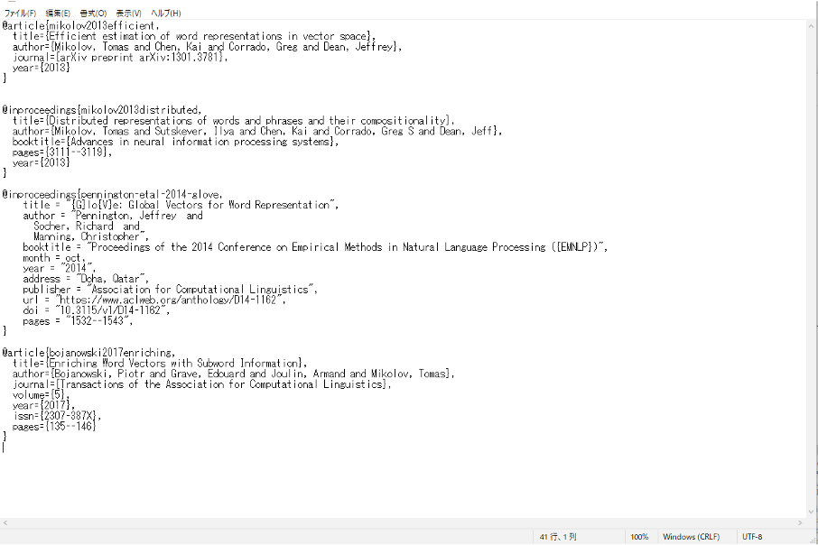
After making this file, we go back to Mendeley. Select "BibTeX (* .bib)" from "Import ..." in the "File" menu. Then select the file you just created and click the "Open" button.The next picture shows the result.
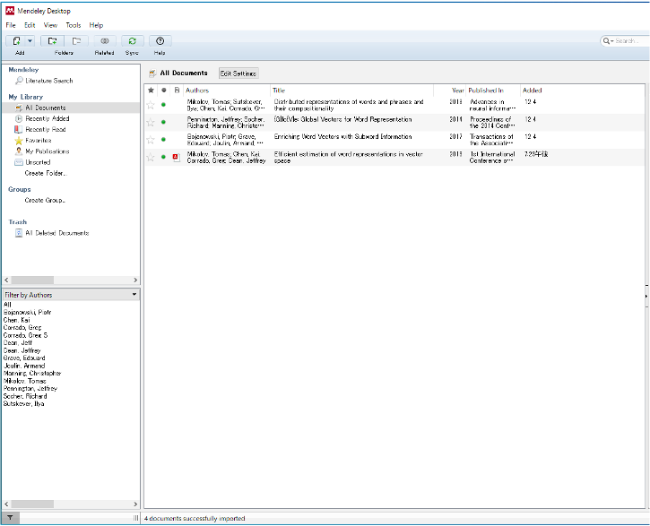
Insert Bibliography into Word
Now we got the list of our references. The next thing is to cite them in MS Word. You need to install the Word plugin to cite references from the list we created into Word documents. Enter the Tools menu and select Install MS Word Plugin.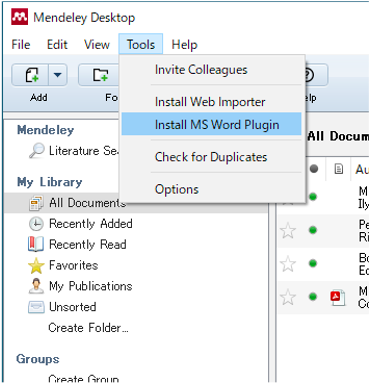
Open the Word app. You can see that a feature called "Mendeley Cite-O-Matic" has been added to the "References" section.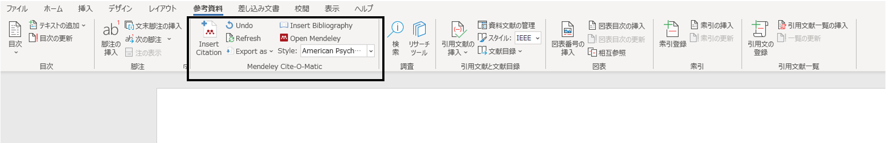
Click "Insert Citation", type the name of the paper you want to cite.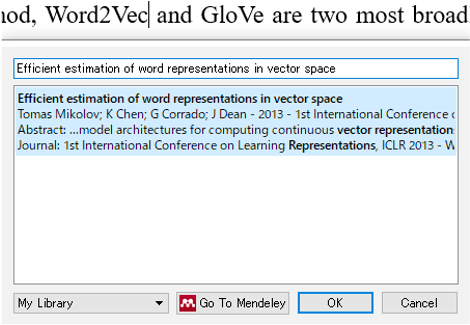
I cited four references in this article, which is shown below.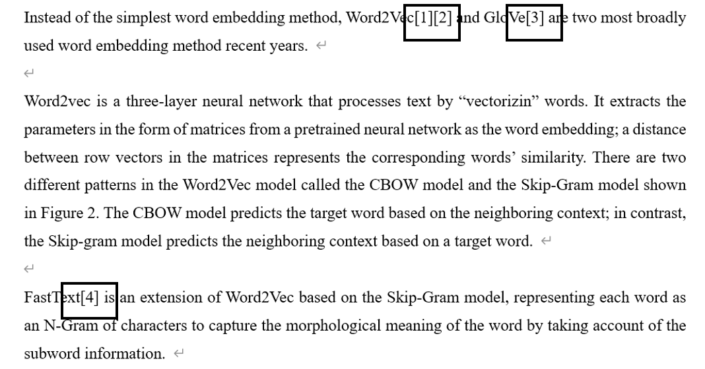
If you want to generate a bibliography, click "Insert Bibliography".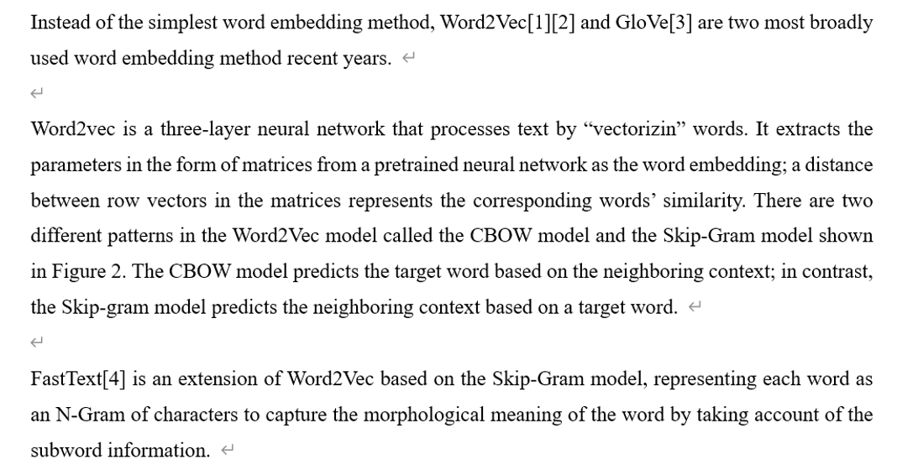